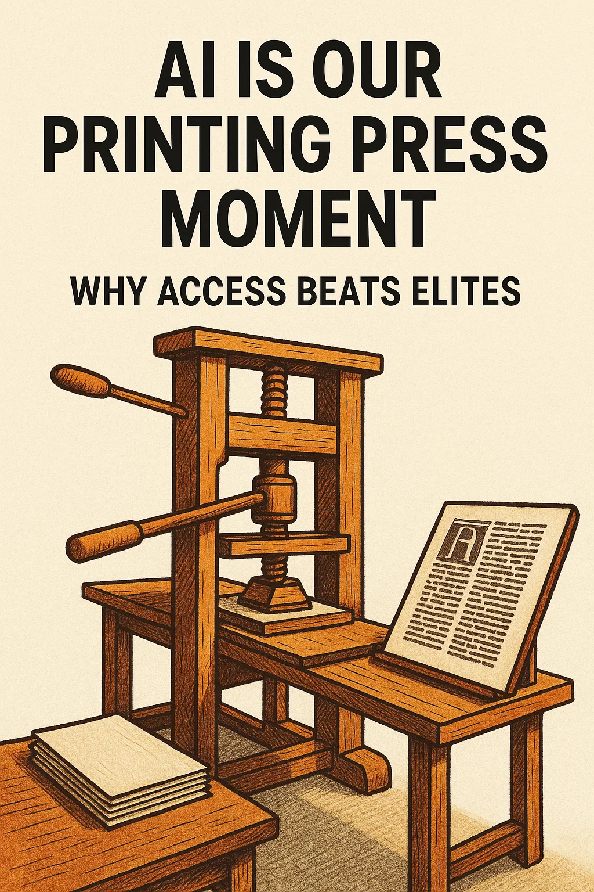

AI Is Our Printing Press Moment: Why Access Beats Elites
Why AI access is revolutionary for small businesses and creators
When books became accessible, "regular people" stopped waiting for gatekeepers and started building.
That was the printing press in the 15th century — the single invention that smashed the monopoly on knowledge.
Today, AI is doing the same thing. Only faster. Cheaper. And on a scale even Gutenberg couldn't dream of.
The Disruption Nobody Saw Coming
In the 1440s, Johannes Gutenberg invented a contraption that changed everything: movable type printing.
Before that, books were hand-copied by monks in candlelit rooms. Producing a single Bible could take years. Only the wealthy or the church could own one.
Gutenberg's press changed the math overnight:
- From months to days. Hundreds of pages could be printed in a single day.
- From elite to accessible. A middle-class family could own books for the first time.
- 📚 Science acceleration — For centuries, scientists worked in isolation. Now they could publish and share findings rapidly. Collaboration exploded.
- ✝️ Religious transformation — Martin Luther's 95 Theses didn't just exist — they spread, copied and distributed widely, triggering the Reformation.
- 🗣 Language standardization — Printed works made spelling and grammar more consistent, creating shared language norms across regions.
- 📜 Business revolution — Contracts, price lists, and product catalogs could be mass-produced. The first scalable "content marketing" was born.
- Small businesses can automate customer emails, phone call scripts, and appointment scheduling.
- Content creators can batch-create a month's worth of posts, videos, and graphics in one afternoon.
- Designers and non-designers alike can create visuals from an idea in their head — no art degree required.
- Data-heavy tasks like financial reporting or forecasting can be run in real-time with a single prompt.
- Pick a tiny friction point:
- Design a micro-workflow:
- Ship your v0.
- Paralysis by analysis — AI evolves daily. If you're waiting for things to "stop changing," you'll be left behind.
- Tool overload — Every day, someone slaps a new label on an old AI tool and sells it on Facebook. Don't try to learn everything. Pick a few impactful tools (like the stack above) and master them.
- Don't hire a poet — buy a press.
- Don't read about change — be the change.
- Ship one useful loop this week. Then another. And another.
And the ripple effects? You'd be surprised how far they went:
The printing press didn't just change how people read. It changed what was possible.
> Sidebar: If you were alive in 1450, the printing press might not have looked revolutionary. It was a clunky machine in a workshop. But within a generation, the world was unrecognizable. Today's AI tools feel the same way.
Why This Matters Now
AI is lowering the barrier to entry for every kind of knowledge work. Tasks that took weeks can now take hours — or minutes.
Some examples:
And here's the key: the winners will be the ones who act now. Waiting for AI to "settle down" is like a merchant in 1450 waiting to see if the printing press catches on.
Do This This Week (60–90 Minutes)
You don't need a "grand plan" to start. You just need one useful loop.
- Slow quotes?
- Customers asking the same FAQs?
- Too many follow-up emails?
- Intake: Google Form → Google Sheet
- Processing: ChatGPT summarizes, decides, or drafts a reply
- Output: n8n sends the email back to your customer
- It doesn't need to be pretty.
- You're building a proof of motion, not a final product.
- Once you've done it once, you'll start seeing loops everywhere.
> Callout: This is the most basic AI automation stack you can build — and it's enough to open the door to everything else.
The Entry Stack
1. ChatGPT / GPT-5
The brain of your operation. Drafts text, makes decisions, summarizes info.
2. n8n
The glue. Moves data from one step to the next without you writing a single line of code.
3. Google Sheets
Your lightweight database and audit log. Cheap, flexible, and easy to understand.
This trio is your printing press starter kit. Learn it well, and you can build more complex stacks later.
What to Avoid
The Bottom Line
The printing press didn't just make more books — it triggered revolutions in religion, science, business, and language.
AI is our printing press moment.
You don't have to wait for permission from a big company, a tech team, or a "perfect plan." You just have to build the first loop.
Access beats elites — every time.